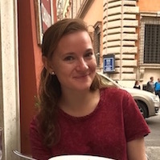
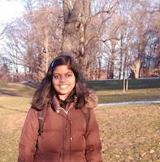

Ryan Lin

Introduction
Hello, my name is Ryan Lin. I’m a junior at the University of Rochester, majoring in mechanical engineering. I am also pursuing minors in computer science and music. I’m a singer and a pianist, taking voice lessons at Eastman School of Music. Both my parents emmigrated from Taiwan, and graduated from Eastman. They are now both successful musicians, raising me with a classical music upbringing. My father is a violinist in the Fort Worth Symphony Orchestra, and my mother is a piano teacher, choir conductor, and even taught the Texas Boys Choir.
College Years
I came into college with 23 credit hours. I took many more AP classes, but many of them didn’t count for classes. In addition, I took summer courses at Cornell, earning 7 credit hours in physics and engineering. While my mechanical engineering and computer science can be interesting and even exciting at times, it is relieving to balance out that analytical thinking with my more creative side in my music classes. I’m even taking advantage of the fact we have a wonderful and prestigious music school right next door, Eastman School of Music, and have an instructional voice teacher there. I don’t have any overlapping classes however, which means to graduate on time, I’m taking 19-20 credits every semester. I’m able to keep on top of it, however, because I don’t want to regret not taking advantage of these four years I’m allowed to solely pursue education. If taking five classes is the same price as four, there’s no excuse not to learn as much as possible.
Work Experience
My first real job was as a waiter, but I suspect not a single person reading this cares about that. I landed an internship summer after freshman year, at a civil engineering company called Lim & Associates. I did and learned a lot of civil engineering. I used the CAD program Microstation Powerdraft to draw up detailed maps of environments from data points provided from our company’s surveyors, used locator maps to make sure our proposed projects wouldn’t conflict with existing pipes and structures, and estimated costs of proposed projects in Excel from the materials we needed to buy. While interesting at times, I think my experience there taught me I’m much more inclined toward mechanical engineering instead.
Source
Content was taken from: http://csc174.org/assignment02/rlin11/index.phpJulia Myers
Introduction
Hi, My name is Julia! I am originally from Westfield, New Jersey but I currently live in Rocehster, New York while attending the University of Rochester. At UofR I am studying to get a major in Digital Media Studies and a double minor in Computer Science and Business. I am also a member of the varsity Cross Country and Track and Field Teams. Outside of classes and athletics, I am a member of the Rochester Design club, the Women in Computing club, and the Varsity Student Athlete Advisory Committee. I am also a Study Abroad Ambassador. I have a brother who also attented the University of Rochester, a sister, and a dog. In my free time I like listening to music, running, and taking pictures.
College Years
When I started school at the University of Rochester I started taking a lot of technology and design classes. For my Digital Media Studies major I have taken courses including Programming for Digital Media, Design in the Digital Age, and Photography which have given me a well-rounded understanding of the media industries and the possible career paths within them. Additionally, for my Computer Science minor, I have taken courses such as aken at the University of Rochester. Computer Science classes such as Intro to Programming, Web design and Development, and Recreational Graphics. For my Business minor I am currently taking Economics and Statistics and will go on to take Finance and Marketing classes in future semesters.
During the spring semester of my sophomore year, I studied abroad in Copenhagen, Denmark. There, I focused my studies on Communications and Media studies. While abroad I took Cross Cultural Communicaiton, Digital Media in Marketing, Photojournalism, and Sociology of the Family.
Work Experience
Since I was 16 years old, I have worked as a lifeguard and a swim instructor. I mainly held this job to make money throughout high school and to gain work experience.Also while in high school I worked as a tutor for the National Honors Society. I tutored English and Math to a freshman student and helped him to study for the SAT. At the end of high school I interned with Nordstrom as a Fashion Ambassador on their BP Fashion Board. As an intern I helped advise the staff on current trends, make decisions about what should be sold in the teen section of Nordstrom, and promote the brand on social media.
While studying abroad in Copenhagen this past spring, I interned at IIH Nordic, an online marketing and data analytics company. There, I wrote articles for their website, helped to make promotional videos for the company, and helped to plan their events. I learned more about the possible professions in the technology and marketing fields, and gained practical work experience. Those experiences in conversation with my major courses have made me interested in pursuing an online marketing or data analytics career.
Source
Content was taken from: http://csc174.org/assignment02/jmyers/lab_02/index.phpPooja Priya
Introduction
Hello! My name is Pooja Priya. I prefer to go by my last name Priya. I am currently a junior at the University of Rochester, majoring in Digital Media Studies and Computer Science. I grew up in Patna, India. It is a big city located near the India-Nepal border. In the Indian education system, it is common for high school students to choose from either the sciences, humanities and business streams. My high school was very focused on the sciences and as a result, I took classes in physics, chemistry and biology. In high school, computer science used to be my favorite subject and so I chose that as my major when I got to college.
College Years
After my first semester, I realized that the University of Rochester curriculum was a lot more flexible in terms of which classes I could take. My interests include music, art, design and computer science. Initially, I wasn’t sure how I might be able to combine that combination of interests, but I found that the field of mixed reality technology combined those aspects very neatly. It involved both the creative side and technical side of my interests. The environment is designed using principles of good design, and it also involves programming the software to make it work. It is a relatively new industry so there is a lot that is still being discovered and there is lots of research going on in this area, both in academia and the industry. I took a few music and design classes to explore my interests and realized that I really liked studying what makes good design, and I ended up adding Digital Media Studies as a second major.Work Experience
This past summer I was part of a field school in Ghana which focused on the surveying, reconstruction and structural analysis of Elmina castle and a few other forts along the coast of Ghana. I was able to learn how to use technology such as photogrammetry, which involves taking pictures of an object from multiple angles and then reconstructing it using software. The course also involved the use of technology such as laser scanning and 3D reconstruction. It was very educational for me and helped me narrow down what kind of career path I want to pursue. I am not entirely certain, but I would like to work in a research environment exploring how digital technologies for mixed reality can be combined with the humanities.